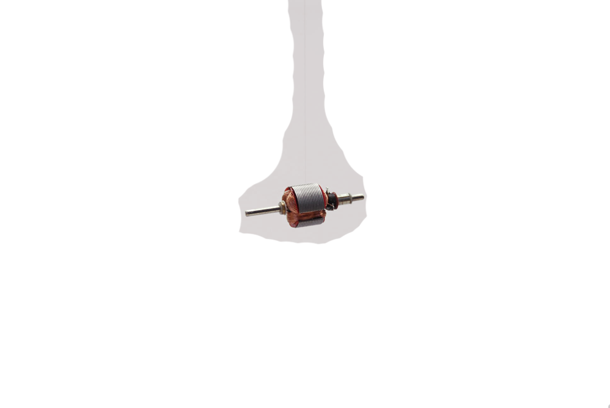

Current traveling through a length of wire creates a magnetic field along it's axis. The strength of the magnetic field is proportional to the current flowing through it and can be further increased by winding the wire into a loop. This phenomenon was discovered by André-Marie Ampère.
The coil inside a motor is simply wire looped around several times. When current flows through the wire, each one of these loops produces an overlapping magnetic field. The Biot-Savart law allows us to calculate the strength of the magnetic field around any current-carrying wire.
The magnetic field produced by the coil interacts with the magnetic field of the permanent magnet, causing motion. The process is equivalent to bringing two magnets close to each other, depending on their alignment, they either attract or repel each other.
After completing half a turn the system attains equilibrium – the magnetic force is balanced out by gravitation. In order to complete one full rotation, the circuit needs to be broken. Therefore, the half insulated end of the wire is used to break the circuit.
The half insulated - half stripped end of the wire serves the very same purpose as brushes in commercially sold electric motors. On breaking the circuit, the magnetic force is removed and the coil continues rotating due to the gravity. Once the full turn is completed, the circuit gets reconnected, and the whole cycle starts again.